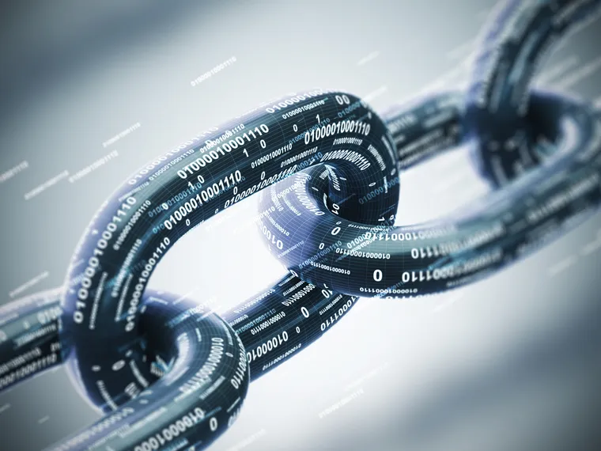

El blockchain es una base de datos distribuida y segura (gracias al cifrado) para todo tipo de transacciones. Consiste en una cadena de bloques (de ahí su nombre) que eliminaría por completo los intermediarios, por ejemplo, en transacciones bancarias, conservando perfectamente la seguridad y la privacidad de los datos, debido a que estos bloques de datos están cifrados. Según el centro tecnológico Gradiant, la ciberseguridad será una de las preocupaciones clave para los próximos años, y la tecnología del blockchain podría ser vital para gran variedad de sectores. Sin embargo, para Nuria Oliver todavía no existen casos de éxito lo bastante claros de esta tecnología, aunque no duda de que seguirá en marcha.
